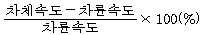
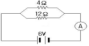

자동차정비기능사 (2011-04-17 기출문제)
1과목: 자동차공학
1. 압축비가 8인 오토사이클의 이론효율은 몇 %인가?(단, 비열비는 1.4이다.)
- 약 45.4
- 약 56.5
- 약 65.6
- 약 72.7
(정답률: 61%)

2. 전자제어 가솔린 분사 장치에 사용되는 연료 압력조절기에서 인젝터의 연료 분사압력을 항상 일정하 게 유지하도록 조절하는 것과 직접 관계되는 것은?
- 엔진의 회전속도
- 흡기다기관 진공도
- 배기가스중의 산소농도
- 실린더내의 압축압력
(정답률: 49%)
3. LPG를 충전하는 고압용기에 설치된 밸브와 색상의연결이 틀린 것은?
- 기상밸브 - 황색
- 액상밸브 - 적색
- 기체밸브 - 청색
- 충전밸브 - 녹색
(정답률: 55%)
4. 전자제어 가솔린 기관에서 ECU에 입력되는 신호를아날로그와 디지털 신호로 나누었을 때 디지털 신호 는?
- 열막식 공기유량 센서
- 인덕티브 방식의 크랭크각 센서
- 옵티컬 방식의 크랭크각 센서
- 포텐쇼미터 방식의 스로틀포지션 센서
(정답률: 66%)
5. 공기 청정기가 막혔을 때의 배기가스 색깔로 가장알맞은 것은?
- 무색
- 백색
- 흑색
- 청색
(정답률: 85%)
6. 윤활방식 중, 오일펌프에서 나온 윤활유 전부를 여 과기를 통해서 윤활부로 보내는 방식은?
- 분기식
- 분류식
- 샨트식
- 전류식
(정답률: 58%)
7. 가솔린 연료 분사장치에서 연료의 기본 분사량을 결 정하는 요소는?
- 흡입 공기량, 기관 회전수
- 흡입 공기량, 산소센서
- 산소센서, 기관 회전수
- 기관 회전수, 냉각수 온도
(정답률: 68%)
8. 150 kgf 의 물체를 수직 방향으로 매초 1m의 속도로 올리려면 몇 PS의 동력이 필요한가?
- 1 PS
- 0.5 PS
- 2 PS
- 5 PS
(정답률: 53%)
9. 4행정 6실린더 기관에서 6실린더가 한번 씩 폭발하 려면 크랭크축은 몇 회전하는가?
- 2 회전
- 4 회전
- 6 회전
- 12 회전
(정답률: 67%)
10. 기관의 실린더 직경을 측정할 때 사용되는 측정 기기는?
- 간극 게이지
- 버니어캘리퍼스
- 다이얼 게이지
- 내측용 마이크로미터
(정답률: 56%)
11. 전자제어 연료분사 장치에는 각종 센서가 사용 되는데 엔진의 온도를 감지하여 컴퓨터에 보내주는 센서는 무엇인가?
- 포토센서
- 사이리스터
- 서모센서
- 다이오드
(정답률: 69%)
12. 캐니스터는 자동차에서 배출되는 유해가스 중 주로어떤가스를 제어하기 위한 장치인가?
- 증발가스(HC)
- 블로바이 가스(CO)
- 배기가스(Nox)
- 배기가스(CO, N2)
(정답률: 71%)
13. 다음 식의 ( )에 알맞은 말은?
- 노말헵탄
- 알파(α)메틸나프타린
- 톨루엔
- 세탄
(정답률: 80%)
14. 배기행정 초기에 배기밸브가 열려 연소가스 자체 압력으로 배출되는 현상을 무엇이라고 하는가?
- 블로다운
- 블로바이
- 블로백
- 오버랩
(정답률: 58%)
15. 실린더의 연소실 체적이 60cc, 행정 체적이 360cc인 기관의 압축비는?
- 5 : 1
- 6 : 1
- 7 : 1
- 8 : 1
(정답률: 74%)
16. 가솔린기관의 삼원촉매장치(Catalytic Converter)에서 정화되는 가스가 아닌 것은?
- NOx
- CO
- HC
- O2
(정답률: 85%)
17. 엔진은 과열하지 않고 있는데 방열기 내에 기포가생긴다. 그 원인으로 다음 중 가장 적합한 것은?
- 서모스탯 기능불량
- 실린더 헤드 개스킷의 불량
- 크랭크 케이스에 압축 누설
- 냉각수량 과다
(정답률: 57%)
18. 다음 중 디젤기관의 연소과정에 속하지 않는 것은?
- 전기 연소 기간
- 화염 전파 기간
- 직접 연소 기간
- 착화 지연 기간
(정답률: 78%)
19. 자동차 높이의 최대허용 기준으로 맞는 것은?
- 3.5m
- 3.8m
- 4.0m
- 4.5m
(정답률: 67%)
20. 디젤기관에서 직렬형 분사펌프의 연료 분사량 조정방법은?
- 슬리브와 피니언의 관계위치를 변경하면서 조정
- 태핏의 간극을 조정
- 플런저 스프링의 장력을 강하게
- 딜리버리 밸브로 조정
(정답률: 54%)
2과목: 자동차정비 및 안전기준
21. 가솔린 연료 분사기(Injector)의 분사형태에서 순차분사는 어떤 센서의 신호에 동기되어 분사하는가?
- 산소 센서
- 에어플로워 센서
- 크랭크각 센서
- 맵 센서
(정답률: 62%)
22. 실린더 행정 내경 비(행정/내경)의 값이 1.0 이상인 기관을 어떤 기관이라 하는가?
- 장행정 기관(Iong stroke engine)
- 정방행정 기관(square engine)
- 단행정 기관(short stroke engine)
- 터보 기관(turbo engine)
(정답률: 67%)
23. 피스톤간극(piston clearance) 측정은 어느 부분에시크니스 게이지(thinckess gauge)를 넣고 하는가?
- 피스톤 링 지대
- 피스톤 스커트부
- 피스톤 보스부
- 피스톤 링 지대 윗부분
(정답률: 64%)
24. 전자제어 현가장치(ECS)의 기능이 아닌 것은?
- 급 제동시 앤티 다이브 제어
- 급 선회시 원심력에 의한 차량의 기울어짐 현 상 방지
- 노면으로부터 차의 높이 조정
- 차량 주행 중 일정한 속도로 주행
(정답률: 65%)
25. 어떤 자동차로 마찰계수가 0.3인 도로에서 제동했을 때 제동 초속도가 10m/s라면 제동거리는?
- 약 12m
- 약 15m
- 약 16m
- 약 17m
(정답률: 30%)
26. 축거가 3,5m, 외측 바퀴의 최대 회전각이 30°, 내측 바퀴의 최대 회전각은 45°, 일 때 최소 회전반경은?(단, 킹핀과의 거리 30cm)
- 6.3m
- 7.3m
- 8.3m
- 9.3m
(정답률: 59%)
27. 수동변속기 차량에서 싱크로 메시(synchro mesh) 기구의 기능이 필요한 시기는?
- 기어가 빠질 때
- 차량이 정지할 때
- 기어가 물릴 때
- 고속일 때
(정답률: 82%)
28. 종감속 기어의 구동 피니언 잇수가 6, 링기어 잇수가 42인 자동차가 평탄한 도록를 직진할 때 추진축의 회전수가 2100rpm이면 오른쪽 뒷바퀴의 회전수는?
- 150rpm
- 300rpm
- 450rpm
- 600rpm
(정답률: 64%)
29. 주행 중 브레이크 작동시 조향 핸들이 한쪽으로 쏠리는 원인으로 거리가 먼 것은?
- 휠 얼라이먼트 조정이 불량하다.
- 좌우 타이어의 공기압이 다르다.
- 브레이크 라이닝의 좌 우 간극이 불량하다.
- 마스터 실린더의 첵밸브의 작동이 불량하다.
(정답률: 73%)
30. 토크컨버터 내에 있는 스테이터가 회전하기 시작하여 펌프 및 터빈과 함께 회전할 때 설명으로 맞는것은?
- 오일 흐름의 방향을 바꾼다.
- 터빈의 회전속도가 펌프보다 증가한다.
- 토크변환이 증가한다.
- 유체클러치의 기능이 된다.
(정답률: 45%)
31. 전자제어식 제동장치(ABS)에서 제동시 타이어 슬립율이란?

(정답률: 72%)
32. 전자제어 현가장치에서 조향휠의 좌우 회전방향을검출하여 차체의 롤링(rolling)을 예측하기 위한 센서는?
- 차속센서
- 조향각 센서
- G 센서
- 차고 센서
(정답률: 72%)
33. 동력 조향장치의 장점으로 틀린 것은?
- 조향 조작력을 작게 할 수 있다.
- 조향 기어비를 자유로이 선정할 수 있다.
- 조향 조작이 경쾌하고 신속하다.
- 고속에서 조향력이 가볍다.
(정답률: 75%)
34. 추진축에서 진동이 생기는 원인으로 거리가 먼 것은?
- 요크 방향이 다르다.
- 밸런스 웨이트가 떨어졌다.
- 중간 베어링이 마모 되었다.
- 중공축을 사용하였다.
(정답률: 70%)
35. 전자제어식 자동변속기 차량에서 변속시점을 기본적으로 무엇에 의해 결정 되는가?
- 엔진 회전속도와 크랭크 각도
- 엔진 스로틀 밸브의 개도와 변속기 오일온도
- 차량의 주행속도와 엔진 스로틀 밸브의 개도
- 차량의 주행속도와 크랭크 각도
(정답률: 64%)
36. 진공식 제동 배력장치에 관한 설명으로 맞는 것은?
- 공기 빼기 작업은 시동을 끈 상태에서 한다.
- 마스터백은 싱글형 마스터 실린더를 사용한다.
- 배력장치에 고장이 발생하면 보통의 마스터 실 린더와 같은 압력으로 제동장치가 작동된다.
- 릴리스 베어링이 마모 되었다.
(정답률: 51%)
37. 클러치 페달을 밟아 동력이 차단될 때 소음이 나타나는 원인으로 가장 적합한 것은?
- 클러치 디스크가 마모되었다.
- 변속기어의 백래시가 작다
- 클러치스프링 장력이 부족하다.
- 릴리스 베어링이 마모 되었다.
(정답률: 47%)
38. 유압식 제동장치의 작동에 대한 내용으로 맞는 것은?
- 브레이크 오일 파이프 내에 공기가 들어가면 페달의 유격이 작아진다.
- 마스터 실린더 푸시로드 길이가 길면 브레이크 작동 후 복원이 잘된다.
- 브레이크 회로내의 잔압은 작동 지연과 베이퍼 록을 방지한다.
- 마스터 실린더의 첵밸브가 불량하면 한쪽만 브 레이크가 작동한다.
(정답률: 64%)
39. 타이어 호칭기호 215 60 R 17 에서 17이 나타내는것은?
- 림 직경(인치)
- 타이어 직경(mm)
- 편평비(%)
- 허용하중(kgf)
(정답률: 73%)
40. 현가장치의 평행 판스프링 형식에서 스프링이 완충작용할 때 스팬(span)의 변화를 조절해주는 것은?
- 캐스터 판
- 섀클
- 센터 볼트
- U 볼트
(정답률: 70%)
3과목: 안전관리
41. 계기판의 엔진 회전계가 작동하지 않는 결함의 원인에 해당 되는 것은?
- VSS(Vehicle Speed Sensor) 결함
- CPS(Crankshaft Position Sensor) 결함
- MAP(Manifold Absolute Pressure Sensor) 결함
- CTS(Coolant Temperature Sensor) 결함
(정답률: 64%)
42. 다음 중 축전지용 전해액(묽은 황산)을 표현하는 화학 기호는?
- H2O
- PbSO4
- 2H2SO4
- 2H2O
(정답률: 68%)
43. 다링톤 트랜지스터를 설명한 것으로 옳은 것은?
- 트랜지스터보다 컬렉터 전류가 작다.
- 2개의 트랜지스터를 하나로 결합하여 전류 증폭도가 높다.
- 전류 증폭도가 낮다.
- 2개의 트랜지스터처럼 취급해야 한다.
(정답률: 74%)
44. 다음 그림의 회로에서 전류계에 흐르는 전류(A)는얼마인가?

- 1A
- 2A
- 3A
- 4A
(정답률: 58%)
45. 광전식 크랭크각 센서나 조향각 센서 등에 사용되며 입사광선을 받으면 전류가 흐르게 되는 반도체는?
- 포토 다이오드
- 발광 다이오드
- 제너 다이오드
- 트랜지스터
(정답률: 55%)
46. 퓨즈(fuse)가 녹아 끊어지는 원인이 아닌 것은?
- 회로의 합선으로 의해 과도전류가 흐를 때
- 잦은 ON/OFF 반복으로 피로가 누적되었을 때
- 퓨즈 홀더의 접촉 저항 발생에 의한 발열 때
- 전원부의 접촉 저항 과대로 인한 전압강하가 클 때
(정답률: 45%)
47. 사이드미러(후사경) 열선 타이머 제어시 입․출력 요소가 아닌 것은?
- 전조등 스위치 신호
- IG 스위치 신호
- 열선 스위치 신호
- 열선 릴레이 신호
(정답률: 66%)
48. 자동차가 주행 중 충전램프의 경고등이 켜졌다. 그 원인과 가장 거리가 먼 것은?
- 팬 벨트가 미끄러지고 있다.
- 발전기 뒷부분에 소켓이 빠졌다.
- 축전지의 접지케이블이 이완되었다.
- 전압계의 메터가 깨졌다.
(정답률: 49%)
49. 에어컨 매니폴드 게이지(압력게이지) 접속 시 주의할 사항이다. 맞지 않는 것은?
- 매니폴드 게이지를 연결할 때에는 모든 밸브를 잠근 후 실시한다.
- 밸브를 열어 놓은 상태로 에어컨 사이클에 접속 한다.
- 황색 호스를 진공펌프나 냉매회수기 또는 냉매 충전기에 연결한다.
- 냉매가 에어컨 사이클에 충전되어 있을 때에는 충전호스, 매니폴드 게이지의 밸브를 전부 잠근 후 분리한다.
(정답률: 71%)
50. DLI(Distributer Less Ignition) 점화장치의 구성요소 중 해당되지 않는 것은?
- 파워TR
- ECU
- 로터
- 이그니션코일
(정답률: 53%)
51. 화재 발생시 소화 작업 방법으로 틀린 것은?
- 산소의 공급을 차단한다.
- 유류 화재시 표면에 물을 붓는다.
- 가열물질의 공급을 차단한다.
- 점화원을 발화점 이하의 온도로 낮춘다.
(정답률: 88%)
52. 선반 작업시 주축의 변속은 기계를 어떠한 상태에서하는 것이 가장 안전한가?
- 저속으로 회전시킨 후 한다.
- 기계를 정지시킨 후 한다.
- 필요에 따라 운전 중에 할 수 있다.
- 어떠한 상태든 항상 변속 시킬 수 있다.
(정답률: 83%)
53. 스패너 작업시의 안전수칙으로 틀린 것은?
- 주위를 살펴보고 조심성 있게 조일 것
- 스패너를 밀지 말고, 몸 앞쪽으로 당길 것
- 스패너는 조금씩 돌리며 사용할 것
- 힘들 때는 스패너 자루에 파이프를 끼워서 작업 할 것
(정답률: 85%)
54. 건설기계 및 자동차 정비 작업장에 산업안전 보건 상 준비해야 될 것과 거리가 먼 것은?
- 응급용 의약품
- 소화용구
- 소화기
- 방청용 오일
(정답률: 86%)
55. 전격방지기를 부착한 용접기의 적합한 설치장소로 거리가 먼 것은?
- 습기가 많지 않은 장소
- 분진, 유해가스 또는 폭발성 가스가 없는 장소
- 주위 온도가 항상 영상 이상의 온도가 유지되는 장소
- 비나 강풍에 노출되지 않는 장소
(정답률: 81%)
56. 축전지의 전해액이 옷에 많이 묻었을 경우에 조치방법으로 가장 적합한 것은?
- 수돗물로 빨리 씻어 낸다.
- 헝겊에 알콜을 적셔 닦아 낸다.
- 걸레에 경유를 묻혀 닦아 낸다.
- 옷을 벗고 몸에 묻은 전해액을 물로 씻는다.
(정답률: 71%)
57. 차량 속도계 시험시 유의사항으로 틀린 것은?
- 롤러에 묻은 기름, 흙을 닦아낸다.
- 시험차량의 타이어 공기압이 정상인가 확인한다.
- 시험차량은 공차상태로 하고 운전자 1인이 탑승한다.
- 리프트를 하강 상태에서 차량을 중앙으로 진입 시킨다.
(정답률: 62%)
58. 기관의 오일교환 작업시 주의사항으로 틀린 것은?
- 새 오일 필터로 교환시‘O’링에 오일을 바르고 조립한다.
- 시동 중에 엔진 오일량을 수시로 점검한다.
- 기관이 워밍업 후 시동을 끄고 오일을 배출한다.
- 작업이 끝나면 시동을 걸고 오일 누출여부를 검사한다.
(정답률: 73%)
59. 일반적인 기계공작 작업시 장갑을 사용해도 좋은 작업은?
- 판금 작업
- 선반 작업
- 드릴 작업
- 해머 작업
(정답률: 61%)
60. 기관을 운반하기 위해 체인블록을 사용할 때의 안전사항중 가장 적합한 것은?
- 기관은 반드시 체인으로만 묶어야 한다.
- 노끈 및 밧줄은 무조건 굵은 것을 사용한다.
- 가는 철선이나 체인으로 기관을 묶어도 좋다.
- 체인 및 리프팅은 중심부에 튼튼히 줄걸이가 되어야 한다.
(정답률: 70%)
압축비 = 8, 비열비 = 1.4 이므로,
이론효율 = (8^((1-1.4)/1.4)) * 100
= (8^(-0.2857)) * 100
= 0.565 * 100
≈ 56.5
따라서, 이 오토사이클의 이론효율은 약 56.5%이다.